Body Plus
2000 р.
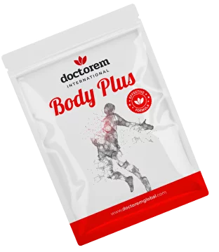
ОПИСАНИЕ:
Body Plus - это трансдермальный пластырь с комплексом витаминов и минералов ориентированный на улучшение спортивных достижений, поддержание организма и укрепление здоровья. Позволяет повысить силу и выносливость, а также способствует быстрому восстановлению энергии после тяжелых нагрузок.Применение данного пластыря рекомендовано не только спортсменам и людям, ведущим активный образ жизни. Разработанный комплекс позволяет активизировать внутренние силы организма и улучшить иммунную систему, что необходимо любому человеку.
Также он способствует укреплению нервной системы, повышает устойчивость к стрессу и депрессии, повышает умственную активность и способствует улучшению памяти.
ОБЛАСТЬ ПРИМЕНЕНИЯ:
- укрепляет мышечную систему;
- способствует быстрому восстановлению сил;
- снижает риск инфаркта;
- защищает от вирусов;
- помогает при лечении болезней пищеварительной системы;
- помогает при лечении диабета;
- поддерживает организм при болезнях Паркинсона и Альцгеймера;
- обновляет клетки;
- оздоравливает кожу.
СРОК ЭФФЕКТИВНОГО ВОЗДЕЙСТВИЯ:
48 часов с момента нанесения.СОДЕРЖИМОЕ УПАКОВКИ:
30 пластырей 130х94 мм.СОСТАВ АКТИВНОГО ВЕЩЕСТВА:
ЗОНЫ НАНЕСЕНИЯ:
Достаточно наносить один пластырь за раз. В случае необходимости нанесения на несколько зон, пластырь можно разрезать на части. Замену пластыря рекомендуем производить через каждые 2 дня.- грудная клетка;
- правая лопатка;
- задняя сторона шеи;
- подошва стопы.
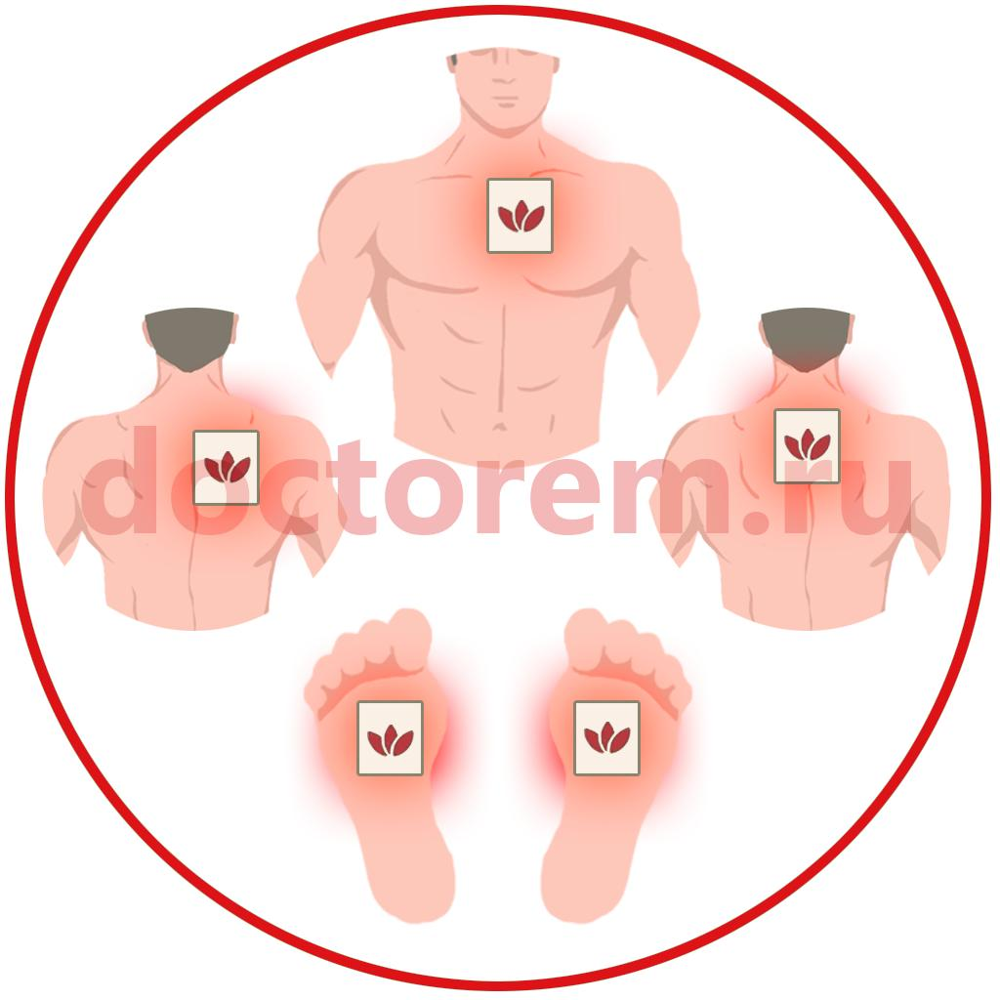
ОПИСАНИЕ АКТИВНЫХ ЭЛЕМЕНТОВ
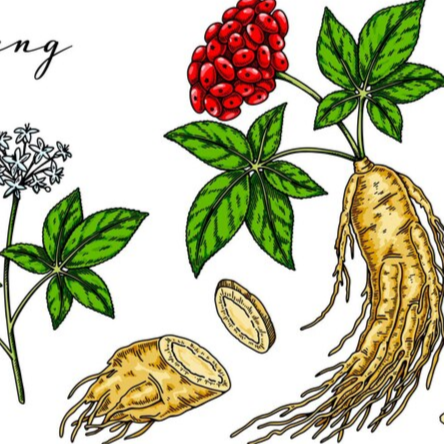
Женьшень
- это природная кладезь полезных веществ. Женьшень использовался людьми еще с самых древних времен, исследования, проведенные во второй половине прошлого века, позволили досконально изучить женьшень, его свойства были подтверждены официальной медициной.Основным эффектом женьшеня является его сильное тонизирующее действие. Экстракт женьшеня при регулярном применении может повышать работоспособность и уменьшать утомление при больших физических нагрузках и во время напряженных стрессовых ситуаций.
Воздействие женьшеня на сердечно-сосудистую систему также достаточно выражено. В небольших дозах женьшень может повышать уровень артериального давления. Под его влиянием уменьшение частоты сердечного ритма, а амплитуда сердечных сокращений увеличивается.
Также женьшень способен улучшать кровоснабжение мозга и кроветворение. В исследованиях отмечались также его антидиуретические свойства и влияние на выработку половых гормонов.
Широкий спектр фармакологических свойств женьшеня определяет его популярность как в народной, так и в официальной медицине. Женьшень может применяться не только как общеукрепляющее и тонизирующее средство, но и как препарат для лечения различных астенических и депрессивных состояний.
Применение женьшеня рекомендуется во время послеоперационного периода, после тяжелых заболеваний или затяжных осложнений разного происхождения.

L-аргинин
- участвует во всех физиологических процессах в теле человека, поэтому важен для нормального самочувствия. Данная аминокислота используется для профилактики развития болезней сердечно-сосудистой и нервной системы, повышает тонус организма и его способность противостоять неблагоприятным внешним факторам.Основные полезные свойства:
- стимулирует кровообращение;
- устраняет эректильную дисфункцию у мужчин;
- выступает мощным антиоксидантом;
- благотворно воздействует на центральную нервную систему;
- способствует лечению сахарного диабета 2-го типа;
- нормализует артериальное давление;
- повышает иммунитет;
- снижает тревожность.
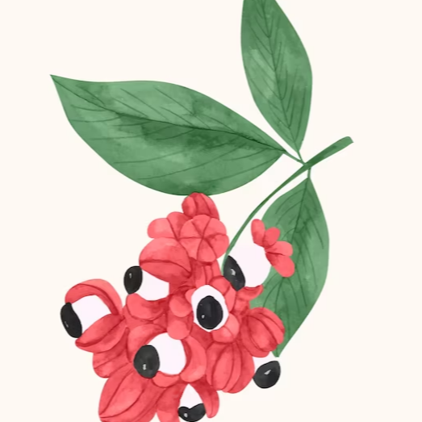
Гуарана
Уже давно известны свойства этого растения, включающие в себя стимуляцию организма, помощь в похудении и улучшения работы мозга. Экстракт гуараны является адаптогеном. Так называются вещества, которые помогают организму адаптироваться к неблагоприятным условиям. Гуарана помогает переносить высокие нагрузки - как физические, так и интеллектуальные. Она повышает иммунитет, улучшает настроение и приводит организм в тонус. Препараты на основе guarana широко используются в спорте. Экстракт гуараны входит в состав многих популярных предтреников - так называются пищевые добавки для спортсменов, которые нужно пить перед тренировкой.
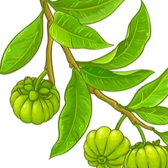
Гарциния камбоджийская
- содержит гидроксилимонную кислоту, которая подавляет аппетит, замедляет превращение избыточных углеводов в жиры, повышает энергетический потенциал организма, способствует снижению уровня холестерина в крови, уменьшает ожирение печени.
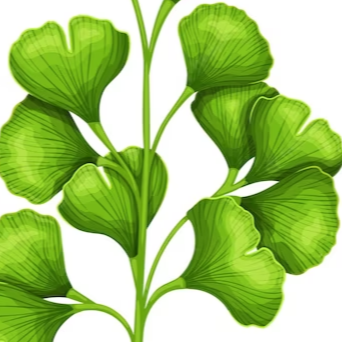
Гинкго билоба
- представитель растительного мира с уникальными целебными свойствами. В лечебных целях используют семена и листья, собираемые преимущественно в осеннее время года.Способствует:
- восстановлению эластичности кровеносных сосудов;
- усилению защиты клеток от негативного воздействия свободных радикалов;
- укреплению иммунитета;
- улучшению кровообращения;
- активизации мозговой деятельности;
- повышению концентрации внимания;
- предотвращению нарушений в работе органов слуха и зрения;
- снижению интенсивности клеточного старения;
- повышению стрессовой устойчивости;
- детоксикации организма;
- улучшению переносимости нагрузок;
- профилактике варикоза, атеросклероза, тромбоза, аритмии, инсульта, инфаркта, нормализации артериального давления;
- устранению метаболических нарушений, ускорению процесса сжигания жира;
- облегчению предменструального синдрома.
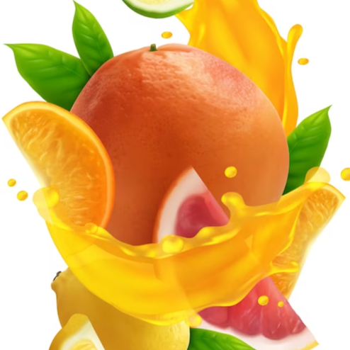
Витамин С
- аскорбиновая кислота необходима нашему организму для защиты от последствий стресса и укрепления иммунитета. Она усиливает процессы восстановления, повышает защитные силы организма и увеличивает устойчивость к инфекциям.
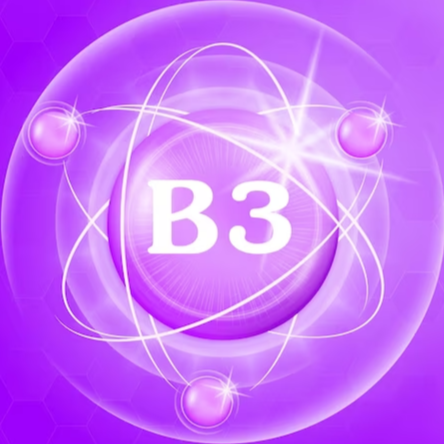
Ниацин (витамин В3)
- один витаминов группы В и важнейший нутриент для производства энергии. В форме ниацина традиционная медицина считает витамин В3 лекарством. Причем, некоторые эксперты называют его самым эффективным веществом, нормализующим содержание холестерина в крови.Основные функции витамина В3 в организме:
- участвует в реакциях получения энергии (вместе с В1, В2) из углеводов (пируватдегидрогеназный комплекс) и жиров;
- нормализует холестериновый обмен;
- принимает участие в свыше 50 ферментативных реакциях, в том числе в производстве стероидных гормонов в надпочечниках;
- участвует на уровне ДНК и РНК в репарации/ликвидации генетических повреждений, нанесенных клеткам организма лекарственными средствами и вирусами, а также в детоксикационных процессах в печени;
- стимулирует синтез эритроцитов.
- защищает сердце;
- необходим для нервной системы;
- обеспечивает психическое здоровье;
- помогает при диабете;
- улучшает кожу и волосы.
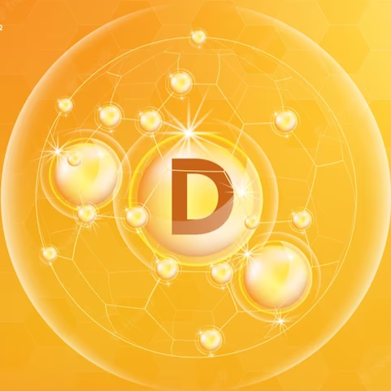
Кальциферол (витамин D)
Польза кальциферола для организма огромна. Он отвечает за здоровье костей, мышц, а также за работу нервной системы. Помогает организму поглощать и использовать не только кальций, но и фосфор. Есть несколько интересных фактов о витамине D: при помощи солнечного света в организме человека вырабатывается витамин D3, который преобразуется в печени в кальциферол; запасы полезного вещества могут храниться в организме и расходоваться только по необходимости; он активизирует работу иммунной системы.
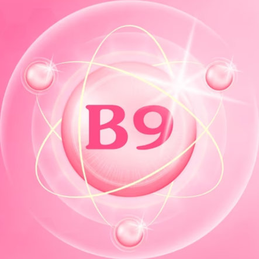
Фолиевая кислота (витамин B9)
- это созданный учеными водорастворимый аналог витамина B9, незаменимого для правильного развития кровеносной и иммунной систем.Восстанавливает иммунитет, поддерживает работу сердца и сосудов, обеспечивает процесс образования клеток крови (эритроцитов) при нехватке железа в организме, принимает участие в синтезе нуклеиновых и аминокислот, пуриновых и пиримидиновых оснований.
Польза фолиевой кислоты:
- помогает предотвратить осложнения при беременности;
- помогает контролировать уровень сахара в крови;
- помогает в профилактике рака;
- укрепляет здоровье мозга;
- борется с психическими расстройствами;
- снижает риск заболеваний сердца.
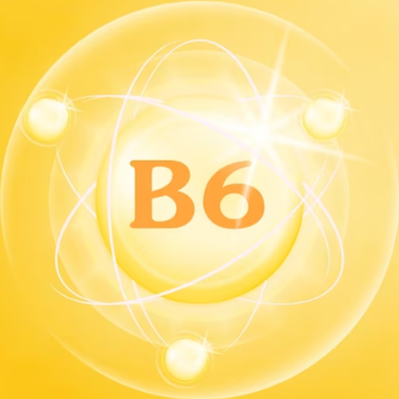
Пиридоксин (витамин B6)
- способствует должному усвоению белка и жира. Помогает предотвращать различные нервные и кожные расстройства. Облегчает состояние тошноты. Способствует правильному синтезу нуклеиновых кислот, препятствующих старению. Уменьшает спазмы мышц, судороги икроножных мышц, онемение рук, определенные формы невритов конечностей. Действует как натуральное мочегонное средство.Витамин В6 может уменьшить потребность диабетиков в инсулине, и, если его доза не отрегулирована, это может привести к понижению содержания сахара в крови.
Пиридоксин полезен при следующих заболеваниях:
- лейкопении;
- анемии;
- токсикоз во время беременности;
- болезнь Меньера;
- воздушная и морская болезнь;
- гепатиты;
- болезни нервной системы;
- различные кожные болезни.
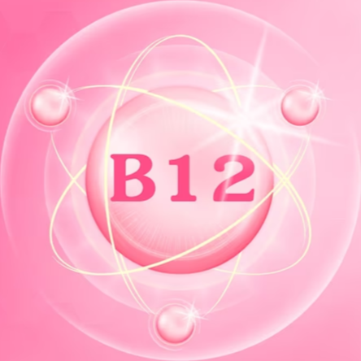
Кобаламин (витамин B12)
- необходим для многих важных гормональных и метаболических функций организма, в том числе для выработки пищеварительных ферментов и транспортировки необходимых питательных веществ в клетки, а также из них. Достаточный уровень В12 крайне важен для нормального кроветворения и неврологической функциональности. Данный витамин способствует синтезу многих соединений в нашем организме. Поэтому он необходим для более чем 100 функций организма ежедневно.Витамин B12 необходим для:
- обеспечения энергии;
- нормального функционирования нервной системы;
- предотвращения анемии;
- освобождения от гомоцистеина;
- синтеза ДНК/РНК.
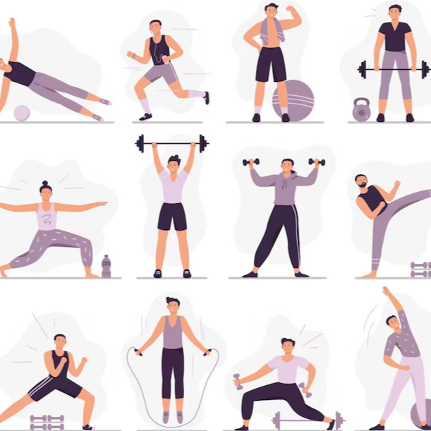
BCAA
(от англ. «branched-chain amino acids») комплекс из трех незаменимых аминокислот с разветвленной боковой цепью. Это изолейцин, валин и лейцин. Они составляют 35% аминокислот в мышцах.Изолейцин - нормализует уровень сахара в крови, способствует восстановлению мышечной ткани и важен для синтеза гемоглобина. Валин - повышает скорость роста мышц, ускоряет процесс их восстановления и заживления. Лейцин- восстанавливает кожу и мышцы, способствует синтезу белка.
Эти аминокислоты незаменимы при занятиях спортом, так как дают мышцам дополнительную энергию. Кроме того, BCAA действуют как доноры азота для синтеза других аминокислот, таких как глутамин, которые важны для поддержания функции иммунных клеток.